충남대학교 컴퓨터공학과 조은선 교수님의 "컴파일러 개론" 강의를 필기한 내용입니다.
다소 잘못된 내용과 구어적 표현 이 포함되어 있을 수 있습니다.
SLR의 문제점
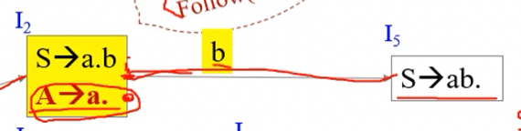
- 위 그림을 보면
- i2상태에 Reduce item과 Kernel item이 같이 존재하는데 그럼 이때에는
- A → a로 reduce를 해야할지 shift b를 하고 5번 상태로 갈지 알 수 없다
- 즉 지금까지 봐온 예제에는 Kernel item이 reduce item이어서 별 문제가 없었지만 위 예제에서 보다시피 SLR으로 해도 Shift-reduce conflict를 피할 수 없더라
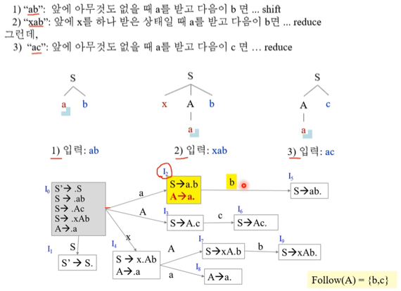
- 일단 위 그림만 보고 대강 진행과정을 생각할 수 있어야 한다
- 그림만 보고 할때는 Reduce를 하면 왔던대로 다시 갔다가 Reduce해서 생긴 논터미널로 움직여줘야되는것 잊지말
- 어쨋든 위의 예제에서 보면
- ab같은 경우에는 2번에서 shift b를 하고 5번으로 가야되고
- ac같은 경우에는 2번에서 Reduce A → a를 하고 0번으로 갔다가 3번으로 가야된다
- 하지만 2번에서는 A의 Follow에 b와 c가 모두 있기 때문에 SLR가지고는 위와같은 세밀한 컨트롤이 안된다 이거임
LR(1) Parsing
- 이것을 해결하고자 그냥 Follow가 아니라 그 path를 타고 왔을때 Follow는 누구냐? 이 뭔소리여
- 어쨋든 그냥 Follow가 아니라 좀 더 조건을 세분화할 필요가 있는 것
- 따라서 LR(1) Item을 좀 변형해 해당 생성규칙으로 Reduce되었을 때 다음에 나와야 되는 토큰도 같이 명시하게 된다
- 이제는 그냥 Reduce를 하는게 아니라 그 다음에 나오는 토큰(Lookahead라고 부름)까지 확인을 하고 Reduce를 하는거고 따라서 그 다음 토큰 하나를 더 확인하기 때문에 LR(1) 이 되는거다
- LL에서의 Lookahead와의 차이점은 LL(1)이면 그다음 토큰 하나를 보고 다음 액션을 결정해주는 것이었다면
- LR(1)은 그 다음 토큰 하나를 보고 테이블을 만들겠다는 약간의 의미상으로 차이가 있다
LR(1) Item
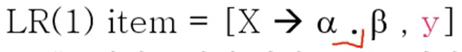
- 일단 LR(0) Item과의 차이점은 맨 뒤에 콤마(,)를 찍고 해당 생성규칙으로 Reduce를 한 다음에 기대하는 토큰이 명시되게 된다는 점이다
- 즉, LHS도 Reduce한 다음에 나올 토큰이기 때문에 SLR처럼 Follow를 고려해주는 셈이지만 SLR에서는 모든 Follow 원소에 대해 Reduce를 하는 것이었다면 여기서는 이제 Follow원소 중 부분집합에 대해서의 액션을 좀 더 세분화해서 명시하게 되는 것
- 따라서 위의 식의 의미를 생각해보면 X → a.b에서 b가 나오면 X → ab.가 되므로 reduce를 해야하지만 reduce를 한 다음에 y가 등장해야만 reduce를 하라는 의미가 되는 것
LR(1) Closure, goto
- LR(1) Item이라는게 새로 확장되었으므로 LR(1) Closure도 확장해줘야 한다
- 그리고 goto의 경우에도 점을 이동하고 Closure를 해주는 것은 동일하지만 Closure가 바뀌었기 때문에 조금 달라지게 되는 것
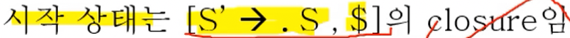
- 일단 시작상태의 Augment grammar가 위처럼 $가 Lookahead로 추가된 것으로 바뀐다
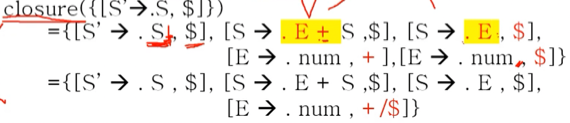
- Closure의 진행과정을 보면
- 일단 점 뒤에 터미널이 오면 끝나는건 매한가지이다
- 그리고 점 뒤에 논터미널이 있으면 그 논터미널에 대한 생성규칙에 점찍어서 갖고오고 재귀적으로 Closure을 구해줘야 하는 것도 동일하다
- 근데 달라지는 것은
- 이제 LR(1) Item의 경우에는 Lookahead까지 같이 계산해서 명시해야 하기 때문에 추가적인 연산이 더 들어감
- 어케하냐면 점 뒤에 논터미널인 경우에는 해당 논터미널을 갖고 오되 논터미널 뒤로 점이 움직였을 경우 등장할 수 있는 토큰들을 Lookahead로 넣어주면 된다
- 위의 예제에서 보면
[S’ → .S , $]에서 일단 S에 대한 생성규칙을 다 갖고와 점을 찍어준다 - 즉,[S → .E+S]와[S → .E] - 그리고
[S’ → .S , $]에서 S뒤로 점이 이동했을 때 나올 수 있는 것은 $밖에 없으므로 Closure Item에 대해서도 $를 Lookahead로 추가해준다 - 즉,[S → .E+S , $]와[S → .E , $] - 그리고 확장된 애들에 대해서도 Closure를 해주기 위해 점 뒤에 있는 E에 대한 생성규칙도 다 가져온다 -
[E → .num] - 근데
[S → .E+S , $]와[S → .E , $]에서 보면 E 뒤에는 $말고도 +도 올 수 있으므로[E → .num]의 Lookahead로 + / $가 들어가게 되는 것이다 - 즉,[E → .num , + / $]가 되는 것
- 위의 예제에서 보면
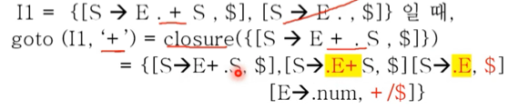
- goto 예제이다 - LR(0)와 동일한데 Closure이 변경되면서 그에대한 여파로 달라지게 된 것
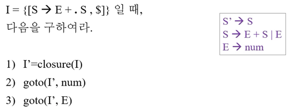
- 풀어봐라
상태전이도
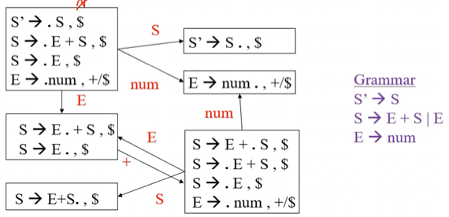
- 뭐 LR(0)에서처럼 그려주면 된다
- LR(0)에서의 상태전이도가 C0였듯이 LR(1)에서의 상태전이도는 C1라고 부른다
파싱 테이블 만들기
- 파싱 테이블 만드는 것도 LR(0)와 거의 동일한데
- Reduce Item을 처리할때는 그냥 전부 Reduce로 꼬라박는게 아니고 Lookahead에 포함된 토큰에 대해서만 Reduce를 박아주면 된다
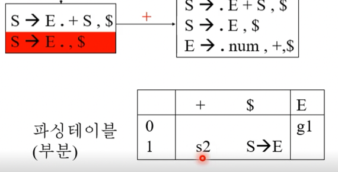
- 빨간색 부분 처리할때 이래해주면 된다는거임
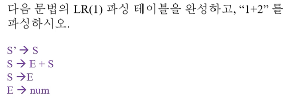
- 풀어봐라
LALR Parsing
LR(1) 파싱의 단점
- 얘는 이제 문제가 너무 정교해서 상태의 갯수가 너무 많아진다는 것이다
- 따라서 상태의 갯수는 줄이고 거의 동일한 성능을 가지는 LALR이 등장하게 되는 것
상태 갯수 줄이기
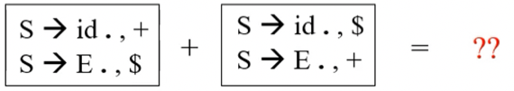
- 일단 LR(1) Item에서 Lookahead를 빼고 그 앞부분을 Core라고 하는데
- 두 상태의 원소가 Lookahead만 다르고 Core은 같다면 이것을 합쳐서 하나의 상태로 만든 것이 LALR이다
LALR 만들기
- 뭐 LR(1)을 만든 다음에 상태들을 병합할 수도 있지만 이방법은 조따 복잡하기 때문에 안쓰고
- SLR을 만들어 LR(0)와 C0를 다 만들고 shift, accept, goto는 동일하지만 Reduce Item을 처리해 Reduce를 할때만 Lookahead를 고려하여 액션을 구성하게 된다
총정리
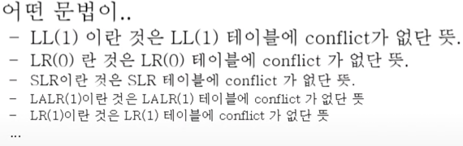
- 어떤 문법이 ~라는 것은 ~테이블에 conflict가 없다는 것이다
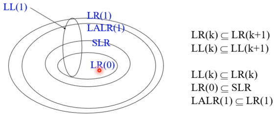
- 참고로 문법들간의 표현범위는 다음과 같음
- 문법을 정교하게 만들면 컴파일러가 할게 많지 않고 문법을 대충만들면 컴파일러가 수정해야되니까 할게 많더라
기출문제
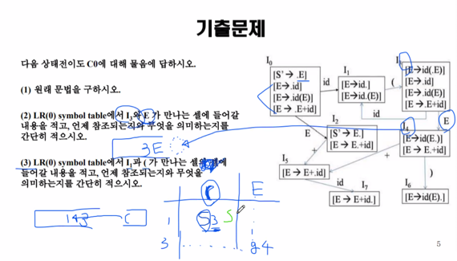
- 2, 3번문항 스택과 입력스트링 그려서 설명하라